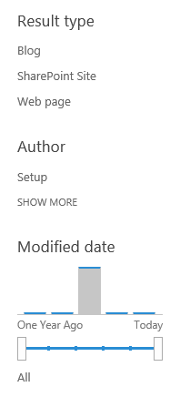
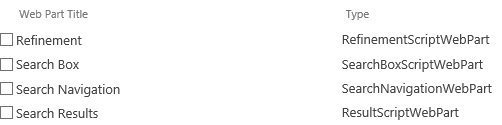
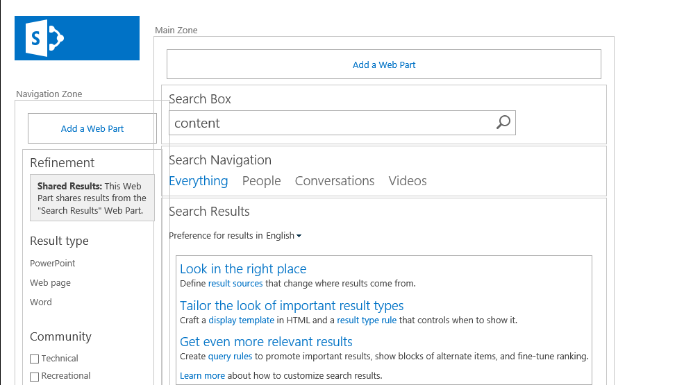
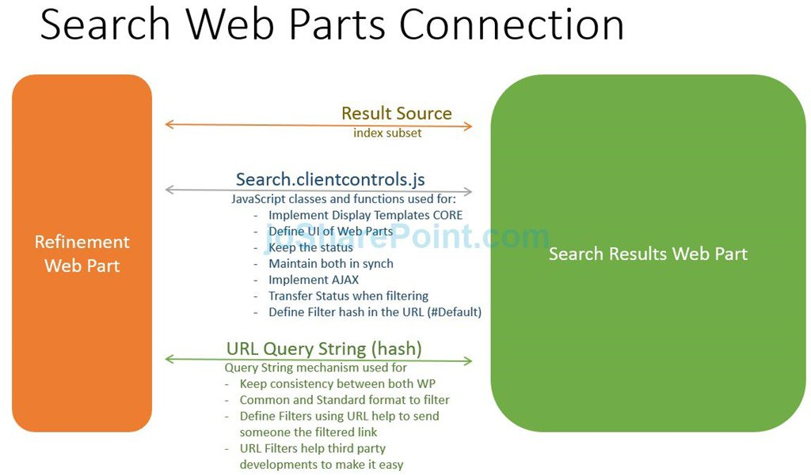

Introduction
In SharePoint 2013, a new search web part named Refinement was introduced, which helps in narrowing down the search results.
Refiners are based on managed properties from the search index.
To use managed properties as refiners, the managed properties must be enabled as refiners, or crawled properties must be mapped to managed properties that are enabled as refiners.

Understanding Refinement Web Part
By default Search Center in SharePoint 2013 is composed of four main web parts:


As we know, Refinement Web Part is intended to filter information displayed in Search Results Web Part.
For us, as a developers, we are interested on how we can modify the default behavior of these web parts.
So, if we take a look the Web Part XML Definition of Refinement WebPart:
1
2
3
4
5
6
7
8
9
10
11
12
13
14
15
16
17
18
19
20
21
22
23
24
25
26
27
28
29
30
31
32
33
34
35
36
37
38
39
40
41
42
43
44
45<webParts>
<webPart xmlns="http://schemas.microsoft.com/WebPart/v3">
<metaData>
<type name="Microsoft.Office.Server.Search.WebControls.RefinementScriptWebPart, Microsoft.Office.Server.Search, Version=16.0.0.0, Culture=neutral, PublicKeyToken=71e9bce111e9429c" />
<importErrorMessage>Cannot import this Web Part.</importErrorMessage>
</metaData>
<data>
<properties>
<property name="HelpUrl" type="string" />
<property name="UseManagedNavigationRefiners" type="bool">False</property>
<property name="TitleUrl" type="string" />
<property name="Hidden" type="bool">False</property>
<property name="ChromeType" type="chrometype">TitleOnly</property>
<property name="AllowClose" type="bool">True</property>
<property name="TitleIconImageUrl" type="string" />
<property name="AllowMinimize" type="bool">True</property>
<property name="AllowEdit" type="bool">True</property>
<property name="Direction" type="direction">NotSet</property>
<property name="Height" type="string" />
<property name="AllowConnect" type="bool">True</property>
<property name="MissingAssembly" type="string">Cannot import this Web Part.</property>
<property name="AllowHide" type="bool">True</property>
<property name="Description" type="string">This webpart helps the users to refine search results</property>
<property name="StatesJson" type="string">{}</property>
<property name="QueryGroupName" type="string">Default</property>
<property name="ChromeState" type="chromestate">Normal</property>
<property name="ExportMode" type="exportmode">All</property>
<property name="AllowZoneChange" type="bool">True</property>
<property name="RenderTemplateId" type="string">~sitecollection/_catalogs/masterpage/Display Templates/Filters/Control_Refinement.js</property>
<property name="CatalogIconImageUrl" type="string" />
<property name="EmitStyleReference" type="bool">True</property>
<property name="HelpMode" type="helpmode">Modeless</property>
<property name="Title" type="string">Filter By:</property>
<property name="AlternateErrorMessage" type="string" null="true" />
<property name="Width" type="string" />
<property name="EmptyMessage" type="string" />
<property name="ServerIncludeScriptsJson" type="string">null</property>
<property name="SelectedRefinementControlsJson" type="string">{"refinerConfigurations":[{"propertyName":"RefinableString06","type":"Text","sortOrder":0,
"displayTemplate":"~sitecollection/_catalogs/masterpage/Display Templates/Filters/Custom_Filter_MultiValue.js","sortBy":0,
"maxNumberRefinementOptions":15,"displayName":"Topics","useDefaultDateIntervals":false,"aliases":null,"refinerSpecStringOverride":"",
"intervals":null}]}</property>
</properties>
</data>
</webPart>
</webParts>
Important
We can see two important properties for us:
RenderTemplateId: That is the Control Display Template for all the Refinement. If we need to change some common UI element, or functionality using JavaScript we can provide a Custom js file. More information here: http://www.eliostruyf.com/creating-custom-refiner-control-display-templates-for-sharepoint-2013
SelectedRefinementControlsJson: It is a JSON-based property intended to configure declaratively all the refinement properties.
1
2
3
4
5
6
7
8
9
10
11
12
13
14
15
16
17{
"refinerConfigurations": [
{
"propertyName": "RefinableString06",
"type": "Text",
"sortOrder": 0,
"displayTemplate": "~sitecollection/_catalogs/masterpage/Display Templates/Filters/Custom_Filter_MultiValue.js",
"sortBy": 0,
"maxNumberRefinementOptions": 15,
"displayName": "Topics",
"useDefaultDateIntervals": false,
"aliases": null,
"refinerSpecStringOverride": "",
"intervals": null
}
]
}
displaytemplate attribute is where we could configure custom refiner display template that was prevoiusly uploaded to “_catalogs/masterpage/Display Templates/Filters”
Connection between Refinement and Search Results Web Parts
In order to provide custom features for Refinement WebPart in Office 365 and SharePoint 2013, it is important to understand completely how Refinement Web Part and Search Result Web Part are interconnected, but let’s focus on this post at the connection between Refinement and Search Results Web Parts.
If we edit Refinement Web Part, we can see the Property Refinement Target that is linked directly to Search Results web part, which means this refiner panel is sending information directly to this Results Web Part.

Behind scenes, the search web parts make use of a JSON formatted string in the URL to do the search and refinements. Also, these two webparts are interconnected by SharePoint OOTB JavaScript engine.

Read more…
You can see an extended explanation about Search.clientcontrols.js here
You can see some examples about URL Query String (hash) usage in Paul Ryan blog: http://paulryan.com.au/2015/dynamically-generating-search-result-page-urls/